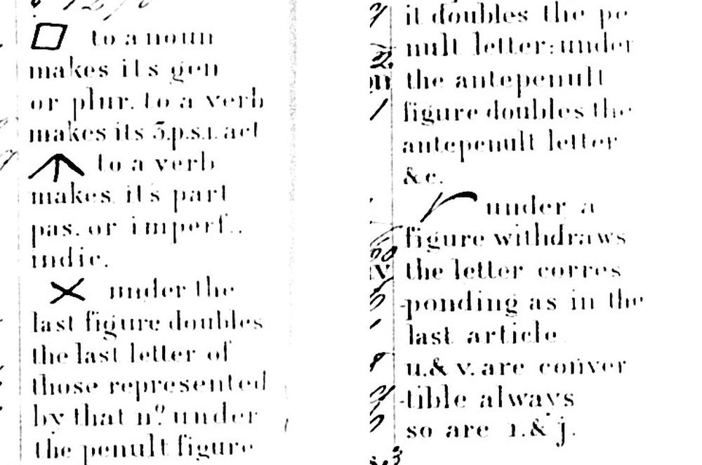
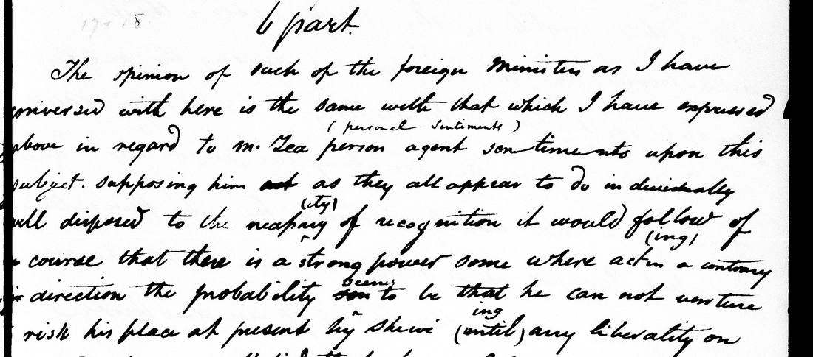

At a glanceKnown key applied · complete · 818 of 844 coded words
- The document
- Alexander H. Everett’s “Notes of a Conversation of Mr. Everett with Mr. Zea”, enclosed with his despatch No. 7 to Henry Clay, Madrid, 25 September 1825. Six passages are in code among clear English: 1,201 number groups.
- Where
- National Archives (NARA), RG 59, Despatches from U.S. Ministers to Spain, vol. 25, microfilm M31 roll 27, frames 0112–0115 and 0119–0121. The copy is endorsed as the duplicate. It was catalogue item 638 here; it is not on DECODE.
- The cipher
- The State Department’s numerical code: 1,600 numbers for words, syllables and letters (the = 1385). Marks under and after a number double a letter, withdraw one, or add an ending.
- How it was deciphered
- With the code’s surviving sheet (NARA M97 roll 13) and the rules for the marks printed on it, applied to three independent transcriptions collated into one. The Department’s own decipherment of the time, of all six passages, is on the same reel (frames 0110–0111).
- What it says
- Zea is able, hard-working and liberal in conversation, and privately well disposed to recognition, but he cannot risk his place: “there is a strong power somewhere act[ing] in a contrary direction”.
- Still open
- 26 words where the code as written does not give the word: a wrong number, a figure left out, a missing syllable, a tick under another figure than the word needs, and two numbers written over or blotted. No person has checked a reading against the film.
- Credit
- A clerk of the State Department deciphered all six passages at the time; at a few places he left what the key gave, and some of his line ends are lost in the binding. WAINUT (pages 14 to 18) and Brice Dudout (all six passages) deciphered them again on 27 October 2026, independently and before the clerk’s text had been found, each with the table rebuilt for John Quincy Adams’s despatches. Andrew Beling found the clerk’s decipherment, transcribed the code sheet and compared the three transcriptions. All six passages were deciphered here in full with the surviving code sheet on 24 November 2026.
01 The Notes and their code
Everett kept notes of his first conversation with Zea and sent them to Washington with his despatch No. 7 of 25 September 1825. The copy on the microfilm is endorsed as the duplicate. Most of it is clear English. Six passages are in figures: three words in the middle of page 1 and eight lines at its foot, the foot of page 2 with the head of page 3, the foot of page 3 with pages 4 and 5 entire and the head of page 6, a passage across pages 14 and 15, and 26 lines on pages 17 and 18, written after the word “End” and before the account of a second conversation.
William R. Manning printed the Notes as an extract in 1925 (Diplomatic Correspondence of the United States concerning the Independence of the Latin-American Nations, vol. III, doc. 1134). He gives the passage of pages 14 and 15 as “[Here follow six lines in cipher, without decodification.]” and does not print or mention the passage on pages 17 and 18. Brice Dudout reports that the coded pages were not printed in American State Papers in 1826 either; that was not checked here.

The three passages on pages 14 to 18 were catalogue item 638. The four on pages 1 to 6 were found when the neighbouring frames were opened during the review of WAINUT’s contribution: about 80 lines more. In all there are 1,201 groups, 444 different numbers.
02 The code sheet and its marks
The numbers are those of the State Department’s code, in which 1385 is the and 1576 of. It is the code of John Quincy Adams’s despatches from St Petersburg of 1811 and 1812, whose table was rebuilt on this site from the Department’s decodes and Ford’s printed decipherments before the sheet was known here. A sheet of the code survives on NARA microfilm M97 roll 13 (frames 1056 and 1057; Ralph E. Weber printed it in 1979 as WE028), and Andrew Beling’s transcription of it was first used for Anthony Morris’s despatches of 1814 and 1815, which are in a copy of the same code with its blocks of a hundred in reverse order.
The sheet gives a value to every number in Everett’s six passages except 1601, which is not a number of the code at all. Among them are the eight that the rebuilt table lacked: 125 contrary, 126 convey, 211 pret, 258 spi, 850 dispose, 917 os, 1354 br, 1512 acy. Four rows of the transcription were corrected for this work: the alphabetical half of the sheet prints sim 233, sin 234 and shal 1093, and 681 is are on its numerical half.

So the marks belong to the key. Everett uses all four, and all but two of the marked groups in the Notes come out by the printed rules (the two are under the table):
| Group | Value on the sheet | Marks | Gives | Word |
|---|---|---|---|---|
| 666 | zeal | a tick | Zea | M. Zea |
| 1178 | whither | two ticks | white | the white of the ball |
| 1034 | claim | two ticks | cli | dis-in-cli-nation |
| 1441 | Italy | two ticks | ity | ob-sc-ur-ity |
| 769 | Turkey | two ticks | ture | ven-ture |
| 117 | connexion | three ticks | connex | connex-ed |
| 231 | put | a tick | pt | ke-pt |
| 251 | son | a cross | soon | soon |
| 466 | uge | a cross and a tick | ugg | str-ugg-ling |
| 1082 | sem | a cross, a lozenge | seems | seems |
| 850 | dispose | a stroke under the last figure, a caret | disposed | disposed |
The printed rule ties the letter to the figure the mark stands under. Here the letter doubled or withdrawn was taken from the word. Seven marks were looked at on the frames in the review of this page on 24 November 2026, by an AI model that knew the candidates. Five stand where the rule needs them (under 769, 256, 457, 982 and 1086). Two do not. Under 1359 bring in des-cri-bing the tick stands under the 3, which withdraws the i (brng); under 800 dous in ind-us-trious it stands under the first 0, which withdraws the u (dos). Those two words are counted as holes. The other marks were not measured.
03 What the passages say
The lines that Manning left in figures come directly after the words “an interference of Providence”, at the end of Zea’s argument. Square brackets mark what the code as written does not give:
I did not think it necessary to enter very fully into the argument with M. Zea upon this subject, more especially as I was pretty well satisfied from the [ten]or of his remarks that they did not convey his real sentiments, and were merely a language imposed upon him at present by particular circumstances.
Page 1 has the same thought at the start. The Minister’s frankness is “real or assumed”, and “He said [many] things to me which I am quite certain he could not really believe himself, and which suppose of course dissimulation; but all persons, especially those in public life, are compelled at times to do this to a certain extent.”
Pages 2 and 3 give his rise: “he was brought into the cabinet by the influence of Ugarte, who was himself a creature [of] Russia. M. Zea however soon broke with his patron, and finally succeeded in removing him from the country by sending him on a mission to Turin.” Then comes a portrait that runs to the head of page 6. Zea is “rather above the middle height, of robust but somewhat inelegant proportions, and bald headed”; his teeth are good, “a thing rare among the Spaniards, most of whom, beginning with the King, ruin their teeth by excessive smoaking”. He speaks French fluently and is well versed in English, which he speaks at times, and has “less of the peculiar air and manner of a Spaniard” than any Spaniard Everett has met. His conversation is liberal, so that when he advances “any grossly illiberal and antiquated notion” he must be “holding for some particular purpose a language foreign to his opinions”. He shares the disinclination to the clergy that goes with such principles, “which suits but indifferently with the policy of a Spanish Minister”, and he told Everett “that he labored incessantly the whole of every day, and two or three nights in the week besides”. If he is overthrown soon by the rival party “he will sink into obscurity”; should he hold his place for some years, “I am inclined to think that his administration will form an epoch in the history of the monarchy.”
The passage after “End” is the political reading:
Supposing him, as they all appear to do, individually well disposed to the necess[ity] of recognition, it would follow of course that there is a strong power somewhere act[ing] in a contrary direction. The probability seems to be that he cannot venture to risk his place at present by shewi[ng] any liberality on this head.
It seems to be also understood that the influence of the Emperor Alexander [is] directed against a recognition. I have not yet had occasion to converse upon the subject with M. de Oubril, the Russia[n] Minister. The policy of Russia in this respect is attributed by some of the Ministers to a spi[rit] of opposition to England rather [than] to the sacred regard for legitimacy which the Emperor assumes, I believe, as his ostensible motive.
The whole text of the six passages, with the numbers and their values line by line, is under Full texts.
04 How it was deciphered
The work was done in four steps by four hands, all with AI models.
- 27 October 2026, WAINUT. The three passages of pages 14 to 18, 355 groups, transcribed from the frames and decoded with the table rebuilt for Adams’s code, unchanged: 347 groups had a value, and the text ran as English with some words from context. With the true table the share of function words was 0.37; with every number shifted, or the table permuted, it was between 0.02 and 0.12.
- 27 and 28 October 2026, Brice Dudout (Europe chiffrée). All six passages, independently and with the same table, after he had tested it on Everett’s despatch of 8 September 1825 against the Department’s decoding printed by Manning: 288 of 304 groups agreed. He proposed the missing values from the alphabetical order of the code and from the sense.
- 22 November 2026, Andrew Beling (the day it was contributed). The State Department’s own decipherment of all six passages, found on the two frames before the Notes (section 05); a third transcription of the groups, made in October, compared with the other two (1,113 groups in common with Dudout’s files, 27 different); and each of the 27 read on the film by an AI reader that was given no candidates, the doubtful ones by a second. The film had Dudout’s digits at 18 places and Beling’s at 8, with one undecided.
- 24 November 2026, here. The code sheet applied to every group, its printed rules read on the frame, and the three transcriptions collated into one. Of the eight places where the film check went against Dudout’s files, six were taken into the collated text: at each the value on the sheet and the Department clerk’s word agree with Andrew Beling’s digits, and the blind film check excludes Dudout’s (623 to 628 me, 433 to 458 ve, 843 to 845 dis, 1031 to 1081 self, 1364 to 1564 observe, 330 to 880 li). 628 and 1564 rest on one blind reader; at 845 and 880 one of the two readers took the first digit for a 3, and at 458 one was unsure of the middle digit. Two were not taken: the group under “describing” and the group for “than” (section 06). The clerk’s word was one of the grounds for the choice at nine places: these eight, and 1385 against 1345 in “the correct principles”, where the film check was split. No word counted as given by the key rests on him alone. The frames were looked at again for these places and for every slip named below, by an AI agent that knew the candidates.
The earlier readings were measured against the rebuilt table, where a value proposed from the alphabetical order or from the sense counts as a hole: 0.904 for pages 14 to 18, and four of the first six pages just under 95%. Against the sheet most of those values are the key’s own. The count below is of words in the coded passages; a word with a bracket in it is a hole.
| Manuscript page | Coded words | Holes | Share given by the key |
|---|---|---|---|
| 1 | 57 | 1 | 0.982 |
| 2 | 35 | 1 | 0.971 |
| 3 | 94 | 1 | 0.989 |
| 4 | 158 | 5 | 0.968 |
| 5 | 173 | 8 | 0.954 |
| 6 | 70 | 1 | 0.986 |
| 14 and 15 | 54 | 1 | 0.981 |
| 17 | 112 | 4 | 0.964 |
| 18 | 91 | 4 | 0.956 |
| Pages 1 to 6 | 587 | 17 | 0.971 |
| Pages 14 to 18 | 257 | 9 | 0.965 |
| All six passages | 844 | 26 | 0.969 |
The class depends on counting 17 words as given by the key under the site’s rules for spellings and for one-digit slips (the 13 spellings and four of the five slips in section 06); counted as holes they would bring all six passages to 801 of 844 (0.949), and pages 14 to 18 to 244 of 257 (0.949), just under the 95% bar.
On 23 November 2026 the entry was split in two, with pages 1 to 6 classed as taken from an existing decipherment. That was decided before the code sheet was applied, and the Department’s decipherment covers pages 14 to 18 as well. With the sheet both parts are deciphered with the known key, so the split was withdrawn on 24 November. The clerk’s decipherment of the time still comes before every reading made here.
A second AI agent, which had not made the collated reading, read it as sentences and checked every line against the key output. It found two places where the reading departed from the key without a mark, refine[d] and Minister[s], which are now holes, and asked for the same standard for the doubt on 1057 and for all the one-digit slips; all four changes were made. A third AI agent then checked this page against its sources, recounted the words and looked at the frames; on its findings [the], des-cri-b[i]ng and ind[u]strious were moved to the holes, which brought the count from 821 to 818.
05 The Department’s decipherment
On frames 0110 and 0111, just before the Notes, a clerk of the Department wrote out the six passages in clear, in six parts; the last two are headed “5 part” and “6 part”, with the manuscript pages “14 & 15” and “17 & 18” noted faintly in the margin. Who wrote it, and when, is not known. A pencil “Decyphered” stands at the foot of page 4 of the Notes.

The clerk worked from the same key and met the same faults in the code. Where Everett wrote 1525 agent for 1535 al, the clerk wrote “person agent” and corrected it; where Everett wrote 625 mation for many, 1593 once in “understood” and 1596 ongue for of, the clerk wrote those too and mended them. His text settles two places where the first two readings differed: 70 is necessary, with “ity” written above it, and 125 is contrary. He has the word, or a correction to it, at 21 of the 26 holes of this reading.
He was not always right. In the second line of page 18 he wrote “best policy”; the third group of that line is 1228 good on the film and in all three transcriptions, and best is 1328. Andrew Beling’s transcription of the decipherment has one AI reader and no second. For pages 14 to 18 it was compared here with frame 0111: the clerk wrote “as would en them” and “over thro” where the transcription has “enable” and “overthrow”. Frame 0110, with his parts 1 to 4, was not read here.
06 What remains uncertain
Every number but 1601 has a key value (1601 is read as a slip for 1001), and no stretch is unread. What remains are 26 words where the numbers as written do not give the word the sense wants. Most are slips and omissions of the writer or of whoever copied the duplicate, and the film shows the numbers as transcribed; at two the tick stands under another figure than the word needs, and at two the digits are not settled.
| Word | Page | As written | The sense wants |
|---|---|---|---|
| [many] | 1 | 625 mation | 615 many |
| [of] | 2 | 1596 ongue | 1576 of |
| [great] | 3 | 1203 gal | 1233 great |
| ey[es] | 4 | 168 ey, 27 love | 271 es |
| [are] | 4 | 634 mem | 684 are |
| ver[s]ed | 4 | 463 ver, 1407 id, 520 ed | 1067 s |
| refine[d] | 4 | 731 re, 343 fine, 637 ment | refined education |
| leve[l] | 4 | 586 le, 458 ve, 1401 I | 1452 l |
| [seems] | 5 | 1083 sen, with a stroke and a lozenge | 1082 sem |
| [the] | 5 | 1385 the or 1345 boa, the third digit blotted | 1385 the |
| th[at] | 5 | 1385 the | 1384 that |
| [under] | 5 | no group | 480 under |
| liber[al]ism | 5 | 880 li, 1325 ber, 1355 bra, 1439 ism | 1535 al; a pencil “1535?” stands over the group |
| ind[u]strious | 5 | 800 dous with a tick under the first 0: dos | the tick under the 8: dus |
| des-cri-b[i]ng | 5 | 1359 bring with a tick under the 3: brng | the tick under the 1: bing |
| Minister[s] | 5 | 21 minister, no lozenge | the plural |
| tal[ents] | 6 | 1366 tal, 129 man | 1293 ent, with a lozenge |
| [ten]or | 15 | 908 or | 1375 ten before it |
| necess[ity] | 17 | 70 necessary | necessity |
| act[ing] | 17 | 1510 act, 1426 in | 1429 ing, then in |
| shewi[ng] | 17 | 1094 she, 1184 wi, 483 until | 438 ng |
| en[able] | 17 | 545 en | 1503 able after it |
| [is] | 18 | no group | 1436 is |
| Russia[n] | 18 | 948 Russia | Russian |
| spi[rit] | 18 | 258 spi | 1477 rit after it |
| [than] | 18 | 1383 than or 1388 then, written over | 1383 than |
Grades of the doubtful readings (H from the key, I inferred):
- The 26 words above are grade I where the brackets stand: the bracketed letters come from the sense. The clerk has the word, or a correction to it, at 21 of them (at [ten]or he wrote “Ton”, reading tone). Two of them, th[at] and [under] on page 5, are supplied here; the earlier readings left that passage open.
- Five words rest on a number one digit from the right one, inside a word whose other numbers the key gives: understood (1593 once for 1573 od), public (1601 for 1001 c), describing, fortune (797 done for 767 tune), personal (1525 agent for 1535 al). The clerk wrote “once”, “done” and “agent” before correcting them, so these are the writer’s slips. Four are counted as given by the key; describing is a hole for its tick (next item). If the four were counted as holes the total would be 814 of 844, and page 2, which has 35 coded words, would come to 33 of 35.
- “describing” (page 5): the first group is 1057 or 1257. Its second digit is a closed oval with a tail; two blind AI readers read 1257. Three ticks stand under it, and the sheet has 1057 crisis, which less three letters is cri, des-cri-bing; 1257 is hath. The group is transcribed 1057 with a query, and it stands either way. The word is a hole all the same: the tick under the next group, 1359 bring, stands under the 3, which withdraws the i, not the r.
- [than] (page 18): the last digit is heavily inked over. Two blind AI readers read 1388, two of the three transcribers and the clerk 1383. It is left as a hole.
- [the] in “the correct principles” (page 5): the third digit of 1385 is blotted, and the film check was split between 1385 and 1345 (boa). Both are whole words, as at [than], so it is counted as a hole. Brice Dudout’s transcription and the clerk have 1385; an AI model’s look at the frame in the review of this page leans 1345.
- Thirteen words are spelt by the code one letter away from the ordinary spelling (two in Catholic) and are printed in ordinary spelling without a mark: dispose-tion, commit-ed, beg-in-ing, Span-ia-ard (twice), speci-lly, mer-ly, ca-tho-like, ad-minister-ation, ep-oc, li-ber-alty, over-thro, at-ri-but-ed. In eight of them (committed, beginning, especially, merely, epoch, liberality, overthrow, attributed) the ordinary spelling has a letter that no group gives. They are counted as given by the key, as on the Adams page. If those eight were counted as holes the total would be 810 of 844 (0.960); if all thirteen, 805 of 844 (0.954), with page 5 at 162 of 173 (0.936) and page 18 at 85 of 91 (0.934).
- 681 are (five times) rests on the numerical half of the sheet and on the Adams table; the entry is too faint on the alphabetical half to settle.
No person has compared a reading with the film: the transcriptions, the film check and the look at the frames of 24 November 2026 were all made by AI models. The reel was not searched for another copy of the Notes, which might have the numbers right where this one has slips.
07 Sources
- National Archives (NARA), RG 59, Despatches from U.S. Ministers to Spain, vol. 25, microfilm M31 roll 27 (National Archives Catalog, naId 188610348): the Notes, frames 0112 to 0115 (MS pp. 1–6) and 0119 to 0121 (MS pp. 14–15 and 17–18); the Department’s decipherment, frames 0110 and 0111.
- The code sheet: NARA, RG 59, microfilm M97 roll 13, frames 1056 (alphabetical, with the printed rules) and 1057 (numerical); printed by Ralph E. Weber, United States Diplomatic Codes and Ciphers, 1775–1938 (1979), as WE028. Transcription by Andrew Beling, in the repository under
targets/morris1813/beling/key/. - William R. Manning, Diplomatic Correspondence of the United States concerning the Independence of the Latin-American Nations, vol. III (1925), doc. 1134 (the Notes, an extract) and doc. 1133 (the despatch of 8 September 1825 with the Department’s decoding).
- Brice Dudout, Europe chiffrée: his reading of the Notes, 27 and 28 October 2026.
- The same code on this site: John Quincy Adams at St Petersburg, 1812; Anthony Morris, 1814–15; Powhatan Ellis, Mexico, 1836–39.


Notes, the three transcriptions, the collated text, the key file and the script that makes them are in the repository under targets/everett1825/.